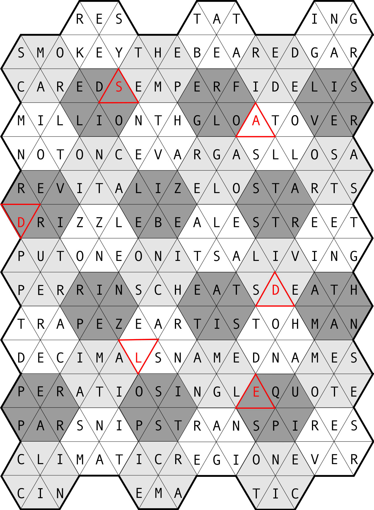

| Rows | Light | Medium | Dark |
|---|
| RESTATING |
|
KEYSER |
CAROMS | SOILED |
| SMOKEY THE BEAR |
EDGAR |
BEAT AT |
TEMPEH |
FOLGER |
| CARED |
SEMPER FIDELIS |
RAGING |
DERIDE |
SILVER |
| MILLIONTH |
GLOAT OVER |
MILTON |
CATION |
DRIVER |
| NOT ONCE |
VARGAS LLOSA |
HAVEN'T |
GAOLER |
BELIZE |
| REVITALIZE |
LOST ARTS |
ATOLLS |
ASTROS |
STARTS |
| DRIZZLE |
BEALE STREET |
NOZZLE |
TUPPER |
PRINZE |
| PUT ONE ON |
IT'S A LIVING |
AL EAST |
CHINOS |
EATS IT |
| PERRINS |
CHEATS DEATH |
TEEING |
DEVILS |
NAMATH |
| TRAPEZE ARTIST |
OH MAN |
TRACED |
MAI TAI |
RAPPER |
| DECIMALS |
NAMED NAMES |
LEARNS |
MANGLE |
POSITS |
| P/E RATIO |
SINGLE QUOTE |
HAND TO |
EMOTES |
EQUIPS |
| PARSNIPS |
TRANSPIRES |
MATINS |
CLINIC |
| CLIMATIC REGION |
EVER |
REGINA |
MARCIE |
| CINEMATIC |
|
SERVER |
NOTICE |
As hinted in the flavortext, some of the blooms can lose their "heads" (first letters) to give 5-letter answers that still fit their clues. From top to bottom in the grid, they are:
| Covered with grease, say | (S)OILED |
| Rings | (A)TOLLS |
| Freight transporter, sometimes | (D)RIVER |
| They're shunned by the pious | (D)EVILS |
| Acquires through effort | (L)EARNS |
| Supplies a fitting line | (E)QUIPS |
The beheaded letters spell out SADDLE; applying the beheading one more time gives ADDLE, a word that matches the flavortext (vis-à-vis the effect of the poppies on you), so that is the answer to the puzzle.
Author's Note
It's nice to get an opportunity to use skills from your day job to make a hunt puzzle. of course, you might consider it cheating since my day job is … making Rows Garden puzzles (of which this is an example). This variety crossword type was invented by Patrick Berry in the mid-2000s, and it's now a staple of both the crossword landscape and the Mystery Hunt. Although I've now constructed well over 300 "regular" Rows Gardens that don't have any meta extraction, the very first one I ever made did, the Rose Kennedy puzzle for BAPHL 7 back in 2013. A year later, I tried making another one, and then another, and the year after that, I quit teaching and made Rows Gardens my job. Sometimes making a puzzle can change your life!
Spoilers for Once Upon a Time in the Quest:
The three most unusual features of the grid are its nonstandard size/shape, and the entries for Row B1 (SMOKEY THE BEAR, when officially he is and always has been SMOKEY BEAR) and Row N1 (CLIMATIC REGION, a phrase that probably falls short of dictionary nature). These were all the result of the extra constraint forced on the grid by the extra hidden answer. I tried pretty hard to make it all work in a standard (21x12) grid, with only frustration to show for it. But as soon as I gave the grid some room to breathe by changing the dimensions, it came together beautifully.